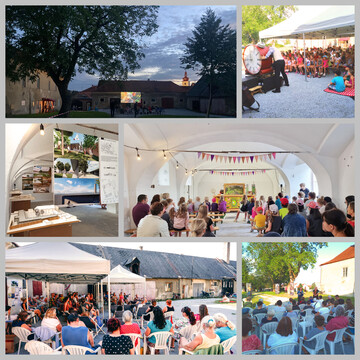

Areál staré fary

Obě poloviny rozděleného areálu staré fary město získalo do svého vlastnictví až na konci roku 2021. Historická budova fary a polovina nádvoří byla ve vlastnictví soukromého subjektu, který chtěl faru zbourat a postavit zde bytový dům nebo starou faru využít jako ubytovnu. S tímto majitelem jsme se nakonec domluvili na směně za pozemky v lokalitě Na Vyhlídce, kde mělo město zpracovaný projekt na nové parcely. Ukázalo se ale, že investice do zasíťování parcel by byly příliš vysoké ve srovnání s tím, za jakou cenu by bylo možné parcely prodat. Je to dáno tím, že zde není možné vybudovat parcely z obou stran kolem nově vzniklé komunikace, tak jako to v této lokalitě již realizoval soukromý developer.
Pro nového vlastníka poloviny fary byla tato směna přijatelná, protože jako stavební firma zde vybuduje nové domy a tím parcely zhodnotí.
S Biskupstvím českobudějovickým jsme se domluvili na tom, že nám svou polovinu fary prodají, když získáme i druhou polovinu od soukromého vlastníka. Vyšli nám velice vstříc s cenou, kterou dokonce můžeme splatit ve třech letech ve třech splátkách.
V některých objektech dříve vlastněných biskupstvím byli ještě nájemci, na úpravě nádvoří jsme tedy mohli začít pracovat až v květnu letošního roku. Zároveň jsme upravili bývalé stáje, ve kterých se již nyní konalo mnoho akcí.
Díky opakované výhře v soutěži Obec přátelská rodině jsme mohli nádvoří vybavit slunečníky a sezením, také téměř všechny akce, které jsme zde pořádali, byly financovány z této výhry.
Podařilo se
-
znovu zprůchodnit areál.
-
uspořádat celou řadu akcí – představení fary, loutkové pohádky, tvořivé dílny, letní kino, jeden z večerů svinenského čtení, prezentaci fotografií vytvořených v rámci multimediálního tábora.
-
získat dotaci na stavebně technický průzkum historické památkově chráněné budovy.
Chceme
- pokračovat v úpravách nádvoří
-
pokračovat v pořádání akcí na nádvoří a v bývalých stájích
-
zpracovat projekt na rekonstrukci historické budovy, která by se v budoucnu měla stát interaktivním muzeem
-
zpracovat projekt na vybudování zázemí pro Trhováček, Centrum komunitních aktivit, kavárnu, obřadní síň, popř. coworkingové prostory (sdílené kanceláře) apod.
-
získat na tyto projekty dotace a postupně celý areál oživit a zpřístupnit veřejnost